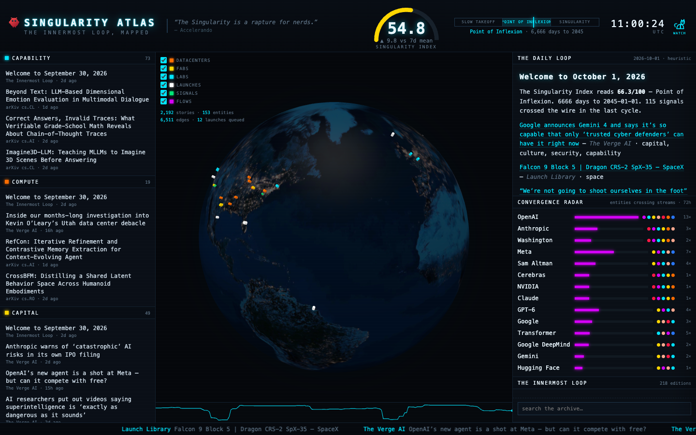

The Daily Loop
Welcome to September 22, 2026
The Singularity Index reads 61.9/100 — Point of Inflexion. 6675 days to 2045-01-01. 75 signals crossed the wire in the last cycle.
Starship | Starlink Group 31-1 (Starship Flight 14) — SpaceX — *Launch Library* · space
UN says AI safeguards can’t wait for certainty — *The Verge AI* · culture, security, agency, capital
Falcon 9 Block 5 | Dragon CRS-2 SpX-35 — SpaceX — *Launch Library* · space
Falcon 9 Block 5 | USSF-385 — SpaceX — *Launch Library* · space
Falcon 9 Block 5 | Starlink Group 15-25 — SpaceX — *Launch Library* · space
Vulcan VC6L | Amazon Leo (LV-01) — United Launch Alliance — *Launch Library* · space
Amazon blocks Meta’s Muse AI agent — *The Verge AI* · agency, capital, culture
RRSI: Regularized Recursive Self-Improvement of Agent Harnesses — *arXiv cs.AI* · capability, compute, agency
Et Tu, Brute? Economic Misalignment in Personal AI Agents — *arXiv cs.AI* · security, capability, agency, capital
Falcon 9 Block 5 | O3b mPower 11-13 — SpaceX — *Launch Library* · space
*Heuristic edition — local LLM offline.*